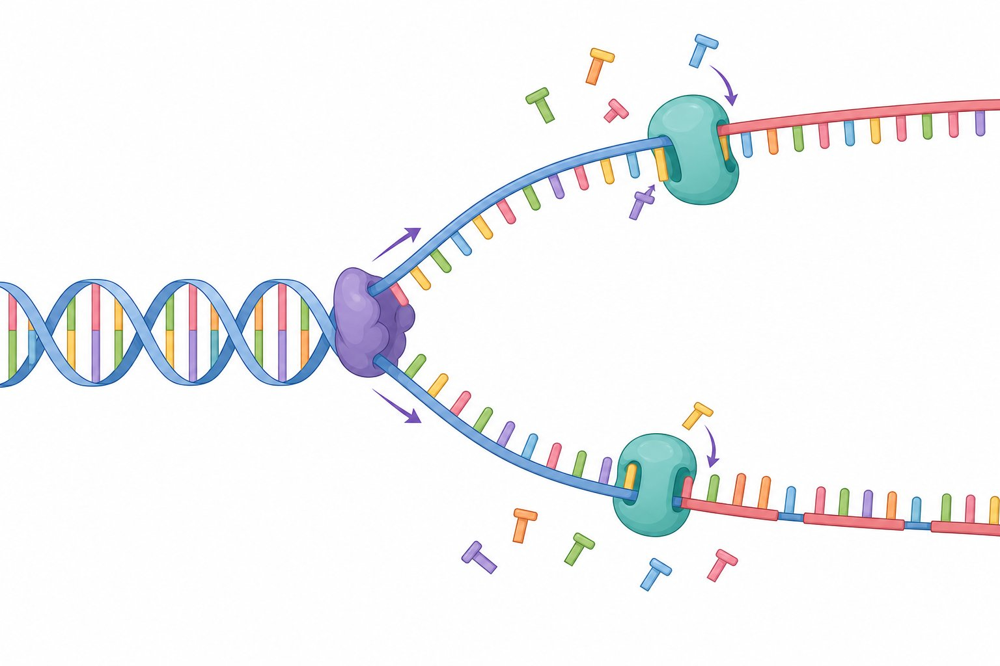

📖 1953: A Corrida pelo Código da Vida
Em um laboratório de Cambridge, na Inglaterra, duas jovens mentes — James Watson e Francis Crick — tentavam desvendar a estrutura da molécula mais importante do corpo: o DNA.
Eles usaram dados decisivos de outros cientistas: a foto 51, a famosa imagem de difração de raios X da Rosalind Franklin, e as regras de Chargaff (A=T e C=G). Em 25 de abril de 1953, publicaram o modelo da dupla hélice na revista Nature — uma das maiores descobertas da ciência.
"It has not escaped our notice that the specific pairing we have postulated immediately suggests a possible copying mechanism for the genetic material."
— Watson & Crick, Nature (1953)
🧬 A Dupla Hélice: Como o DNA é Estruturado
O DNA é formado por duas fitas antiparalelas enroladas em hélice. Cada fita é um polímero de nucleotídeos, formados por um fosfato, um açúcar (desoxirribose) e uma base nitrogenada.
As bases pareiam de forma complementar: Adenina (A) liga-se à Timina (T) com 2 pontes de hidrogênio e Citosina (C) liga-se à Guanina (G) com 3 pontes. Essa regra de pareamento é a base da replicação e da hereditariedade.
| Base | Pareia com | Pontes de H | Tipo |
|---|---|---|---|
| Adenina (A) | Timina (T) | 2 | Purina |
| Timina (T) | Adenina (A) | 2 | Pirimidina |
| Citosina (C) | Guanina (G) | 3 | Pirimidina |
| Guanina (G) | Citosina (C) | 3 | Purina |

🔄 Replicação e Síntese de Proteínas
Na replicação, a dupla hélice se abre (enzima helicase) e cada fita serve de molde para uma nova fita complementar (DNA polimerase). O resultado: duas moléculas idênticas de DNA — o que explica a transmissão da informação genética.
- Transcrição — no núcleo, a fita de DNA é copiada em RNA mensageiro (RNAm).
- Tradução — no citoplasma, os ribossomos leem o RNAm e montam a proteína; cada códon (3 bases) determina um aminoácido.
- GENE — trecho de DNA que codifica uma proteína (ou RNA).

⚖️ Genética de Mendel: As Leis da Herança
No século XIX, Gregor Mendel, monge austríaco, estudou ervilhas e descobriu como as características são transmitidas. Cada característica é controlada por alelos (versões de um gene): um dominante (A) e um recessivo (a).
| Conceito | Definição |
|---|---|
| Genótipo | Constituição genética (AA, Aa, aa) |
| Fenótipo | Característica observável (ex.: semente lisa) |
| Homozigoto | Alelos iguais (AA ou aa) |
| Heterozigoto | Alelos diferentes (Aa) |
| 1ª Lei de Mendel | Cada par de alelos se separa na formação dos gametas |
| 2ª Lei de Mendel | Genes de características diferentes se segregam de forma independente |